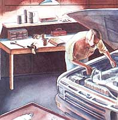
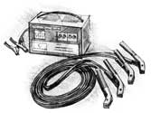
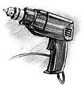
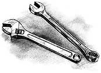
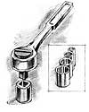
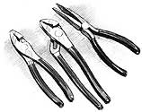

A tool kit for self-sufficiency in auto maintenance and repair.
Illustrations By Barry Ross
I hear a lot of new-to-the-country people claim that they enjoy working with wood or garden seedlings, feel compatible with the warmth and vibrancy of life, but are put off by engines...by inanimate metal. I felt that way, too, when I first quit the city for a life on the land. Fossil-powered machinery seemed contrary to the earthly values that motivated me, and engine exhaust and the humming of gears were too reminiscent of city smog and clatter.
But once hard reality skinned the romantic gloss off country life, I came to realize that, just as a modern farmer is as much or more heavy-equipment operator/mechanic as husbander of the land, self-sufficient country living is as much keeping trucks and tractors running as it is gardening or cutting firewood.
Country life is by definition lived far from town and from convenient services like auto repair shops. But this very distance makes us even more dependent on reliable vehicles than townsmen. Perversely, a major objective of country self-sufficiency is freedom from the consumerist rat race-in particular, $45 per hour, often unreliable auto repair services. We keep our engines running ourselves.
An Approximation of Life
And there is a satisfaction to maintaining machines. They aren't alive, but they approximate life in their mechanical way with metal-on-metal components running at high speeds and high temperatures... prevented from grinding one another into iron filings only by precision tolerances and a thin film of oil or grease. Auto work consists of replenishing those lubricants, refining fine tolerances between moving parts, and replacing worn components before they fail (and leave you stranded at night, 50 miles from home, in a raging snow storm). The tasks include raising heavy weights to work on what's in or under them, and removing, adjusting, and replacing metal, plastic, and rubber parts. To do the work you need tools to grip the fasteners that hold the parts together plus jacks, hoists, and ramps to elevate the work, and a place to get it all done most efficiently.
The equipment is different from common household and woodworking tools, but choosing and using it is as satisfying as any other hand craft. Following is my list of tools a countryman needs to keep the homestead wheels turning reliably. Not that you should expect to overhaul engines or change transmissions in a home shop ...unless auto mechanics becomes a paying trade or personal avocation. The time and expense of obtaining the specialized equipment and skills of a mechanic are too great for servicing a single old farm truck, the passenger car, and your garden tractor. However, using the equipment that I'll describe for a conscientious program of preventive maintenance and minor repairs should go a long way to assure that you'll seldom, if ever, have to perform-or pay to have a pro perform-really major vehicular surgery.
First Things First
In more than 30 years of busting knuckles on my cars, trucks, tractors, and assorted farm machinery-I have never yet had the one "tool" that is most desirable: a weather-tight, heated garage with a concrete floor. A lot of work is performed lying flat on your back under the vehicle. Doing so in mid-winter on wide-spaced barn floorboards is mighty chilly. Doing it on a dirt floor that melts into three inches of greasy mud in spring is worse.
Plus, drive-on ramps to raise a vehicle's front end for oil changes, hydraulic floor jacks that hold heavy axles off the floor for tire changing and brake work and jack stands needed for more serious underchassis jobs will sink into mud and wobble dangerously on uneven old boards. And, in case you learn to enjoy auto-repair work and want to attempt really major jobs (like me), you'll find that transmission jacks and engine cranes needed to handle the heaviest components of a vehicle won't move at all on dirt or boards. Neither will "creepers," those low platforms with castors that mechanics use to glide around effortlessly under a car. (Laying plank "roads" over rough-board floors or sinking planks into the dirt will work-sort of-but a truly flat and level floor is better.)
So, save your pennies for a concrete floored garage, or put hard-floored, sheltered motor vehicle workspace right up there with a big garden area and a weathertight stock barn on the list of features you look for in a new country place.
Second to a hard floor on my list of priorities is a battery charger and a heavy-duty extension cord long enough to reach from the vehicle's parking place to a convenient household or barn electrical outlet, plus at least one free standing battery maintained in good, fresh, and fully charged condition (kept indoors in winter), and a set of jumper cables. I don't know how many times I've come out, already late for an appointment in town, only to find a vehicle with a stone-dead battery-occasionally from a short in the wiring or suddenly defunct battery, but usually from headlights left on overnight, a car door left ajar and the dome light on all weekend, or just from sitting unused for too long.
It is time-consuming and embarrassing to have to telephone a neighbor to bring his truck over to give you a start, and if you must call out a service truck from town, it's expensive to boot. Unless you have and are willing to abuse-another vehicle for a jump start, you'll need a spare 12-volt battery or batteries, plus a way to charge them, and jumper cables to transfer juice from the spare battery to the dead battery in your vehicle.
Often, severe cold will reduce a battery's efficiency; when I need to start a vehicle in sub-zero weather, I routinely hook up jumpers and a fully charged spare battery carried out from the warmth of the house.
A good-enough spare battery will cost $10 used from a junkyard and $30 new from the auto section of any discount mall store. Or better, get a fresh, new, top-quality battery for the truck. Clean up its existing old but-still-good battery for emergency use.
To spark your vehicles, get Exide, Delco, or another brand name you recognize, or buy from a local retailer you trust. Like tires, conventional lead acid batteries are still relatively low-tech and easy to make, so fly-by-nighters can cobble them together. But they aren't easy to make with consistent reliability, and poorly built connectors inside el cheapos can develop shorts between cells.
Get a five year-warrantied battery and plan to replace it after four years. Be sure the purchase date is punched into the tag on the battery, and put the sales slip/warranty in a safe place so you can get a prorated refund if the battery fails prematurely.
Jumpers and Chargers
Don't waste money on a set of mall store-cheap jumper cables with thin six-gauge or even "heavy-duty" four-gauge copper cable. They will waste much of the starting battery's power through electrical resistance, and can heat up and possibly harm your vehicles. Go to an auto parts supplier like NAPA, or look in a mail order catalog and invest as much as $65 in 15- to 25-foot, really thick, two-gauge cables with rust-resistant, zinc-plated, even jawed 500 amp-clamps at each end.
A charger is a simple 120VAC-to-12VDC transformer that has no moving parts, and it needn't be fancy; a little $20 mall store version will slow-charge any battery overnight. Be sure it is designed for large auto size 12-volt batteries, not little motorcycle or snowmobile batteries. However, a better charger for about $50 will shut off automatically to prevent overcharge and can develop a good 7.5- or 10amp surge to perk up a battery that is not completely run down in just a few minutes. With a quick top-charge you can often be on your way and let the alternator finish the battery-charging job while you are on the road. To keep stored batteries charged, you can get plug-in or solar-powered trickle chargers for about $15.
Tire Care
Third essential is a tire-changing/repair kit: a good jack and wheel-lug wrench, a tire-repair kit, and an air compressor. Country roads and drives are loaded with nails, glass, and "sharps" of all kinds-all of 'em yearning to puncture a tire. As often as you find a dead battery in the morning, you'll find a dead-flat tire-or more often, one that's half down from a slow leak: a small puncture or one still partly sealed by the object that did the damage.
First, get some Fix-A-Flat-spray-paint-type cans of compressed air plus a sealant that will repair most flats long enough to get you home or to a service station. Keep one in each vehicle's trunk or glove compartment for road flats.
Get a good jack as well. The crummy little bumper jacks that come with most vehicles are for emergencies only. Get a $20, 4-ton hydraulic hand-jack and a $10 "+"-shaped, four-socket lug wrench for each vehicle and if you can afford it, a $100+ wheeled trolley-type floor jack if you have a concrete floor shop. The handjacks have a screw extension that will raise them high enough above the floor to reach most any vehicle's axle. But, the longer they are, the less stable. I have several footsquare x 2inch-thick oak blocks to raise the jack off the ground so it needs only to be pumped a few times to do its job. The blocks also provide a firm, stable base in snow or on soft ground.
Also, get several awl-and-rubber-string flat-fixer kits that repair most punctures in modern tubeless tires. You brush soap suds over the tire; bubbles will point out the puncture. Then, usually without removing the wheel from the car, you can dig out the nail, thread a length of gum rubber through the eye in the awl's pointed end, work it into the puncture, and fix the tire for good and ever.
Pressurized Air
I recommend keeping a little $20 mall store mini air compressor in your vehicle. They plug into the cigarette lighter and are slow to inflate a road flat, but are reliable. For shop use, though, everyone should have a large line-powered compressor.
A compressor's capability is rated by the cubic feet of air it can move constantly at a given pressure. A gas or electric motor powers a pump that pushes air into a steel pressure vessel, shutting off and turning on automatically to maintain the pressure set by a pair of valves-one to set the tank pressure and one for pressure in the air hose.
Air-flow is determined by the tool in use. A tire will inflate happily with any pump that can develop 100 pounds of pressure in a closed vessel (such as a tire or football) with minimal air flow. To operate normal-duty air-powered mechanic's tools, however, requires constant output of a minimum four cubic feet per minute at 90 psi.-an entirely different proposition demanding dimensionally greater power.
However, high-capacity compressors are expensive, and for more than 25 years I kept tires inflated and blew out fuel lines and gummed-up carburetors with a chugchugging old piston-pump on an ancient electric motor that I hooked to an old propane tank. It took forever to get up to 50 or 60 pounds of pressure, but served the use.
The best small compressor I have found for sale today is Black & Decker's Air Station Inflator/Compressor, a high-speed, small displacement electric pump that develops tire pressure quickly and sells for under $50. If mated with a small portable air tank (about $30), it would make a good basic farmstead air supply for occasional use.
You'll pay $150 minimum for a constant-use, pressure-switch-equipped compressor on a big, wheeled tank. More powerful, more easily carried are compact, somewhat lighter-weight professional models used by painters. With two small tanks, or pressurized air contained in a tubular frame-they cost $250 minimum A set of the four or five most popular tools in small homeowner-size and okay quality costs another $120. My compressor and tools are made by Campbell -Hausfield, a low-to-medium-price brand found everywhere-in mail-order catalogs, the auto departments of Sears/J.C. Penney/Ward type stores and in larger home centers and hardware stores.
Once you have air, you'll never know how you functioned without it. A high pressure compressed-air gun will blast dirt out of spark plug sockets and brake drums, clean out foot wells and luggage space, will unclog carburetor jets and fuel lines ...as well as fill the kids' bike tires (if you are very careful not to over inflate them), plus inflatable boats and air mattresses, soccer balls and more.
In the shop, an air-powered impact wrench will remove frozen lug nuts and ease tire changing greatly; an air hammer, die grinder and rotary disc grinder will speed blacksmithing and body work; an air-powered ratchet-wrench will remove stuck or rusted nuts or studs; an air chisel will cut rusted-together exhaust pipes; and the compressor can power paint guns for autos as well as paint and stain the house, squirt wasp nest remover into the eaves, and do much more around the home and barn. For less cost than its equivalent electrical counterpart, you can get nearly any tool in air-power: circular and reciprocating saws, metal shears, lube-guns, sandblasters and high-pressure-sprayers.
The individual tools, a set of black-steel sockets for the impact wrench, a 50-foot length of air hose, and a set of couplers will cost between $25 and $50. All told, equipping yourself with good homeowner quality"air" and the tools to fit will set you back $400 to $600. Northern Hydraulics is the best mail-order source I have found for compressors and air tools.
Electric Power Tools
Lacking "air," you'll find that many of the electric-powered hand-held tools used in woodworking and farmstead maintenance will find a use in the auto shop. If they tend to stay there, buy one for the shop only. A high-power, V-drive highspeed electric hand drill is essential and a bench-mounted drill press is helpful; you can get a rugged if inelegant imported 8" travel-drill press and a 3" drill press-vise to hold work on its 6"wide table for under $100-a real bargain considering what it can do.
You'll want a set of good quality high-speed drill bits. Avoid those metal boxes of cheap imports that come in dozens of X.," sizes you'll never need. They don't last long in metal. Do keep a supply of several Yin" bits (even top-quality, U.S.-made small bits snap easily) two or three X", Y", and 3/8" bits plus a good-quality V2", a 9/16", and half inch. You'll also want grinding stones in several shapes to mill down metal parts as well as steel and brass wire brushes to remove rust and scale.
A major step beyond handheld grind-stones on a drill is a twin-wheel bench grinder with a coarse stone on one side and fine-grit on the other. You'll find that you are constantly shaping metal for all kinds of auto and farm purposes. Before I got into blacksmithing, I made knives and garden tools out of saw blades and old spring steel with nothing but a bench grinder and a hand drill. Went through a lot of Carborundum...but it worked.
Get the largest grinder motor you can manage. Small fractional-horsepower hardware-store models lack torque to keep going when the work gets heavy, and their high-rpm wheel will kick out or chip thin work like knife blades-and it revolves so fast it can heat metal faster than it grinds it down. Electric motors last practically forever and a huge, old, slow-turning, 1hp motor picked up for a few dollars at a barn sale is ideal even if it needs a spin of the wheel to get started and takes a while to get up to speed. Replace an antique power cord if it's a dry and cracked rubber-insulated wire covered with frayed cloth, ending in an ancient Bakelite plug.
You'll need a sturdy table or work bench to mount the grinder on, but it needn't be level, square, plumb, and flat like a woodworking bench. I use an assortment of oak-plank benches and old (recycled) fiat-faced, solid-wood entrance doors bolted to the shop wall in back and supported in front on wood-post legs. The bench should also hold the biggest steel jawed bench vise you can manage. Buy, or fabricate from sheet stock, a set of copper vise jaw-plates to hold plastic and soft metal that would be marred by the vise's roughly-serrated steel jaws.
Hand Tools
All country households have a junk drawer holding (amid the odd rubber bands, tacks, chewing gum wrappers and outdated store coupons) an odd assortment of pliers, screwdrivers and wrenches. Inherited with the house or bought to install curtain rods and repair leaky water pipes, they seldom have precision-shaped, hardened-steel jaws or bits suitable for serious automotive work. Cheap, wrong-sized or ill-shaped tools will only frustrate you, and can damage the work.
Here is my suggested list of hand tools you really need, some you should have but can live without and some that are luxuries but worth it if you have a few spare dollars. Unless otherwise indicated, get the absolute best quality you can find. Nothing is as sweet as applying the right tool to a job and having it work. Nothing is more frustrating than having a sloppily made wrench or socket slip off a bolt so you bruise your knuckles, or bruise the head of a nut so you can never again get a good purchase on it.
You must have tools to fit both inch measure and metric fittings. The world is slowly adopting the universal metric system, but so long as there are fine old American and English-made vehicles in service, we'll need tools and fasteners in inch-measure approved by the Society of Automotive Engineers (SAE).
An all-American/Canadian car should be all-ASAE, a Japanese vehicle all-metric... in theory. But, in today's global economy vehicles are assembled from major components made all over the globe, which in turn may have sub-components made who knows where. A General Motors truck assembled in Canada can have an engine assembled in Malaysia Out of U.S. and Japanese components so you'll have an SAE-made alternator attached with metric fasteners, an SAE carburetor fastened to the intake manifold with metric bolts ...and you need tools and fasteners to fit them all.
Wrenches: In time you'll want a full set of combination wrenches-the kind with an open-front/four-sided crescent jaw at one end and a closed 12-point box at the other in SAE sizes from V," to I 1/2" or 2" in Y,,,inch increments and metrics in sizes from 4mm to 20mm. You'll probably obtain these in several increments as needed: a set of mid-sizes to start, angled "ignition wrenches" for the small sizes, and a set of "tractor wrenches" for the big ones. Accumulate odd and off-sizes as the need arises.
To start, get a basic nine-piece SAE set in 1/4, 5/16, 3/8, 7/16, 1/2, 9/16, 5/8, 11/16, 3/4 inches ...or an 11-piece set that adds the expensive 7/8 and 1-inch sizes. Metrics come in comparable sets: 10mm to 19mm to start. I find a set of thin wrenches invaluable for getting into tight spots-get them in as many sizes as you can find. Wrenches in 1/64 " increments, with odd-angle heads, or cres cents, or closed-sockets at both ends are nice to have, but unessential for home mechanics. Good-quality 16- or 18-piece sets run about a dollar a wrench. S-K, the premium U.S.-made professional-quality brand sold by auto supply outlets, and Snap-On tools sold from trucks that call at local shops cost more and, arguably, are worth it.
It is good to have a set of three or four adjustable wrenches that will let you change jaw width quickly, and here be doubly sure to get the finest quality you can. Sloppily made adjustables slip off nuts and bruise more knuckles than any other tool I know. Be ready to pay more than $30 for a topquality set.
You will need a set of low-priced monkey wrenches iii three sizes; get an extra big one too. Plumbers need finely machined pipe wrenches, but subtlety doesn't matter in auto repair where these tools are used to apply brute force to stubborn fasteners. When you can, pick up a length of steel pipe that will slip over the handle of the large-size monkey wrench to apply extra leverage-say, to a recalcitrant axle nut that hasn't come off in 25 years. A set of three goes for $35.
While we are discussing nut-removal tools, get a set of nut-splitters too to use as a last resort. They cost only $10 a set and will repay their cost many times the first time you use them to get a stubborn nut off a stud-a headless screw with one end sunk into the engine block. If you put too much force on a nut you can break off a stud that must then be drilled out. Split the nut and the stud remains intact.
Ratchet-Handles and Sockets
Another tool where quality is essential is the clicking ratchet-wrench handle with a little forward/backward switch and socket quick-release button on top, and underneath on the business side-a square bit that fits into a round sockets having 6point hexagonal or 12-point universal mouths in a variety of sizes.
Handles must be industrial strength and sockets must be precision shaped to fit snugly over bolt heads and nuts; must be drop-forged to hold up to great stress; and be triple chrome-plated to last for years without rusting. You can fork over $10 and more for a single socket bought from Snap-On. Sets are much cheaper, but the expense is justified; a top-quality socket set will last your lifetime and pass on to your mechanically inclined daughter without a nick on them.
Handles and socket sets are Categorized by the size of the square drive bit that holds the sockets. Little 1/4" drive handles are for working in tight spaces where you don't need to use much force, and the sets usually come with small-size sockets. Most of the work you will do-using small sockets as well those up to 3/4"-will be performed with a 3/8" handle. Half-inch drive handles and sockets are for when major force must be applied (sometimes to small sockets over small nuts). Even larger drives are needed to work on farm tractors, 18-wheelers and industrial equipment. I have never needed a 3/4" -or 1" drive handle or sockets badly enough to spend the megabucks they cost. So far, I've found that a monkey wrench works on the big jobs.
Start off with a 3/8" drive handle and basic socket set for $20 to $30. Then, get 1/4", and finally the most expensive (and least used), 1/2".
Sockets come in regular and deep lengths. You may want a set of deep sockets to remove nuts cinched down over protruding studs or bolts when you gain experience. But most nuts will come off and go on with less expensive regular (shallow) sockets-in the same sizes as aforementioned wrenches.
You will also need 3/8" drive spark ping sockets in two common automotive sizes: 5/8" and 13/16". These are deep hex-sockets that slip all the way down over spark plugs. They contain rubber inserts at the top to hold plugs' delicate ceramic insulators.
Sets are the cheapest way to buy sockets and ratchet-handles. But if your 3/8" set Contains all 12-point sockets, buy snuggerfit ting hex-head shaped sockets in most used sizes: 1/4-, 3/8-,5/16, 1/2" and 9/16". Also, get a three-piece set of extension rods in all bit sizes. And, get 1/4 - to 3/8- and 3/8- to 1/2" adapters so you can use one size socket in another driver.
Finally, be sure you have sockets or box wrenches that fit the square-headed drain plugs in your vehicle's engine oil pan and transmission. Removing these brass or softsteel fittings continually with adjustables will eventually turn the plug heads round. If the differential has drain plugs with square holes rather than protruding heads, get a differential-plug wrench or socket to fit. To remove the really tough nuts, get a "T"bar with a sliding 1/2" drive bit or a long, cushion-handled flex bar with a pivoting 1/2" drive bit on the end, but no ratchet.
Unless you are more careful than 1, you will forever be dropping tools down into your vehicle's dark places-and the little ones don't always go through to the floor or lodge somewhere visible. My truck has a small fortune in sockets and bits lodged in its crannies. I suggest that if you live really far from town, you buy duplicates of most used small wrenches and sockets, or get back-up sets of rack-sold super cheapos.
It can be more convenient to remove a threaded fastener with a waggling back and forth hand motion rather than round-and-round, and there are many places where you will appreciate having an open socket for the ratchet-handles that will accept screwdriver bits.
Screwdrivers
Time was when you needed screwdrivers with full shafts and handles in all sizes for the only slot-headed fasteners we had: standard straight-slot (where you have to rotate the handle a full 180 degrees for each new bite) and Phillips head where you only need rotate your wrist a more convenient 90 degrees. Auto manufacturers discovered that if the 4-point X-shaped Phillips head made screw-fastening on the assembly line marginally faster, 6- and 8point star-shaped drives went on and off the work faster still, while deep, square bits will hold a screw on the tool so it can be inserted one handed. So now we have a whole variety of drive bits. Most common are TORX-with a shallow, round-bottomed hole with eight or so tiny little points around the edge. You find them holding on inside and outside trim of vehicles and the pits are so shallow they bruise if you try removing them with ordinary drivers.
Buy regular shaft-and-handle screwdriver sets in the most frequently used sizes of regular and Phillips bits. Get top-quality, long- and short-handled drivers in as big a set as you can find; driver bits vary in width and thickness to precisely fit different sizes of screw head. The more drivers in a set, the smaller will be the difference between one and the next, so the tighter can be your driver-to-fitting fits. Ill-fitting driver bits will ruin screw heads.
I use Stanley screwdrivers purchased at discount from the mall. The quality can't be beat and the handles are sized, shaped, and colored differently for various sizes and between Standard and Phillips ...so you can grab the correct driver by feel or by looking at the handle, rather than peering through the under-chassis gloom at the tiny little bit end. My favorites also have slight ridges on the bits and are magnetized so they hold screws one-handed.
But for TORX and the other peculiarities, you can buy a handle-and-bit set from the mall. Driver bits of all kinds are made to fit into a single handle/holder with a magnetized hex-socket or put in an electric drill. Get a set that contains with V,"- and V-drive sockets to hold the bits as well, so you can manipulate the bits with your ratchets. The few bits that you use often for me, Phillips heads used to drive drywall screws in woodworking-will bruise quickly, but you can get replacements.
Odd Bits
One type of specialized star-bit that comes on 3/8" drive sockets is essential to remove the bolts that hold on some Ford and GM front brake calipers from the stone blind backside (so you can't see to use imprecise bits). In my experience, they are impossible to find for sale anywhere in time and space but in the JC Whitney catalog: stock# 13NT5588U for $8.99. While you are at it, order a Seal Driver Kit: #13NT21098 for $19.99, with 16 adapters so you can insert grease seals into front axles, tranny's, and crankshafts evenly and easily without ruining the seal or bearing, losing tube, or all three. If your car is a late model, you may also find "E"-series starbolts in odd places, and will need an eight-piece socket set: JCW #12NT7319T for $14.99.
Also, get a full 18-piece set of "hexkeys"six-sided bare-metal shafts bent 90 degrees at one end, which you'll need to loosen set screws that hold keepers and pulleys on shafts. You don't need them often, but you need them absolutely when you need them at all. They must be of hard, but springy steel. Mall store versions will bend and bruise in a single use, so get better quality from Sears or NAPA. Get an assortment of the little headless, pointy-ended set-screws, too. Tiny, they are easily lost.
Pliers
Stanley also makes top-quality pliers that you can find at reasonable prices at the mall. Get a set of regular rivet-joint adjustables, a set of mechanic's pliers with needle nose, side-cutting, and slip-joint designs in regular and small sizes. Lock-grips in three sizes are essential, but name brands are expensive and el cheapos work fine for the brute holding jobs they are designed for. Snap-ring pliers have little pins that poke into holes at the ends of spring-steel rings you'll find hidden away holding small parts in place, and that can't be removed with any other tool. Get a cheap four-piece set-and get an assortment of snap-rings with it. The rings are springy and tend to snap off the pliers and fly away, never to be seen again.
Ramps
Probably the best solution to simple under-chassis work like changing oil is to drive only four-wheel-drive or high-wheel trucks with little ground clearance. Lower vehicles must be jacked up.
But, never get under a vehicle that is supported only by a jack-mechanical car hydraulic. All jacks eventually let go.
To raise low autos off the ground for oil changes and front-end tube, buy or build a set of drive-on ramps. Steel ramps work fine if appropriately sized to the vehicle and anchored securely to the floor. One-piece, $20-economy models from the mall are okay for small economy cars. For full-size vehicles, spend $50 for heavy-drm two-piece ramps. If you have a concrete floor, clean it of oil and be sure the ramp, grip the surface well. If working on bar c ground, remove spongy sod under ramp.,, tamp underlying soil firm, and level and anchor ramps with blocks or rocks. Shin them level and lag-bolt them securely ii you have a wood floor. I place concrete car wooden blocks under the front axle beside the ramps to catch the car in case the ramps tip or slide.
To support a vehicle by its axles, you need sturdy, adjustable jack stands. 'these are even tippier than ramps, and must he set on a firm, level surface. I place concrete blocks beside them as a safety measure. For advanced work, you will want wheeled engine and transmission jacks or a block-and-tackle suspended from the roof on chains or a trolley, but that's a ways down the road for me, and I presume for you as well.
Miscellaneous
You will need a hacksaw with a supply of metal-cutting blades, hammers in several sizes, a set of metal-cutting chisels, and a set of aligning punches (to poke through bolt holes so you can insert bolts through adjoining parts). Also, bolt cutters, a putty knife, and metal files in flat and round shapes and several diameters. From the local auto supply outlet get an inexpensive spark plug gap tool, and if you think you'll be going onto engines, get a set of flat-steel feeler gauges and a torque wrench.
Buying bolts and nuts, hose clamps, and gaskets singly from a hardware store is expensive-and they stock only American coarse and SAE fine threads in mild steel. You will want SAE and metric, steel and brass, "T" nuts, "O" rings, gaskets material and more-in all sizes. Auto supply outlets stock them, but I suggest saving money and many a drive to town for a single nut, bolt, or washer by ordering packaged hardware assortments from the mail order catalogs. Not "1,001 (low-grade) fasteners for $51.11," but good quality fasteners in small lots.
You will want a good-quality hand operated grease gun and cartridges of axle grease and white grease. Buy a good brand of engine oil by the case of cans and recycle the cans. Get squeezable plastic bottles of gear lube that you can squirt in sideways, an assortment of funnels, including one with a long goose neck to use to add fluids in awkward locations. Often you must fabricate a funnel for a tight squeeze; I cut what I need from a roll of 12"-wide aluminum flashing. (You'll need tin snips to do that.)
When antifreeze is on sale in July, get a case. Also small funnel-tipped and spray cans of penetrating oil and light machine oil, and a can of hard bearing grease.
A pop-riveter with a variety of rivet sizes and metals is good to have, though real body shop tools are not common in farm shops. Do get a propane torch, several bottles of propane, and a spark starter. Heating will free up most rusted on nuts, (and will thaw frozen pipes in the house cellar, start charcoal in the barbecue, and more.)
For electrical work, get a selection of solid and stranded hookup wires, a multimeter and a stripping/clinching tool, and a variety of spade lugs and electrical fasteners.
Finally, keep a supply of tapes and wire. Get electrical tape in ordinary black-plastic and shrink-tape, masking tape and the most useful of all: Duct Tape. Don't get "Duck" Tape from the mall, but professional, metalized Duct Tape that contractors use to seal seams on a sheet metal hot-air heating duct. Get wire in soft steel and brass and in several gauges.
Sources
I hope you find a country place that comes complete with a beginning mechanic's heaven: a barn with an undisturbed old-time-farm machine shop in back. You'll find massive screw jacks, jacks, and pry bars, huge old crescent wrenches, blacksmith's tools, nut and bolt assortments, ancient magnetos and kerosene burning carburetors, oil-soaked orange crates and wooden cigar boxes full of parts accumulated over several lifetimes of working on farm machinery.
BE WARY OF AUCTIONS: Too many people end up catching "bidding fever" and finish the day paying more for tools than if they went to a department store.
Otherwise, you can look for old tools at barn sales, tag sales, and yard sales in country towns. Be wary of auctions; you can contract a case of bidding fever and end up overpaying several times what an item is worth. Often, you'll find unorganized assortments of rusty but restorable old tools, nails and bolts, old iron and whatnot jumbled in crates, and you can walk off with the lot for a dollar or two.
Avoid buying no-name or house-brand tool sets from mall stores. Dimensions are liable to be sloppy, corners rounded and steel soft. Wal-Mart and other mass merchandisers label tools with familiar sounding names like Popular Mechanix and Master Mechanic, but suppliers change and quality varies.
Any time you see the distinctive yellow-and-black Stanley label, you can be confident of quality. The company's hand tools are often the most expensive on a mall-store rack, but are fine quality no matter where it's purchased. The top line of Sears Craftsman brand (it has two or more quality levels) is also excellent quality and any Sears retail store will honestly replace any hand tool that breaks. A couple of years ago, I found what must have been a 30year-old Craftsman ratchet-handle in the road. It was gutted-its innards, dial, bit and pawls, and all, had somehow gotten busted out. I took it to town and was given the equivalent currently manufactured (top-of-the-line) model in trade instantly, with no paperwork, argument, or hassle, no appeal to the supervisor or even the computer. Tools from NAPA and other auto supply stores or from Snap-On trucks are also top quality but are high priced.
Magazine merchandisers and the TV home-shopping networks sometimes sell name brand tools at what seem to be superbargain prices. In my experience, these are invariably the bottom lines and of inferior quality to the top lines that cost relatively little more.
Sears, the big auto supply chains, and other mass-merchandisers sell mechanics' tool assortments at exaggerated discounts. They can be top quality ...but, you'll have a thousand bucks invested in tools, half of which you will never use and another 30 percent of which you may use once in a lifetime of amateur automotive repair. And, not even buying a complete mechanic's set will teach you to be a mechanic.
Mail Order
Following are the snail-order catalogs that no gear head can be without. They sell good quality tools at cut-rate prices and have a larger variety than any retail store. Catalogs are free.
JC Whitney, 1917-19 Archer Ave. PO Box 804719, Chicago IL 60680, 3124316000. "EVERYTHING AUTOMOTIVE," the catalog reads. Handheld power tools, every automotive hand tool you can imagine, stereos, gadgets, but mainly 200+ pages of small print listing a full range of engine, running-gear, and body parts for everything that rolls from the Model "T" on.
Northern Hydraulics, 2800 S. Cross Drive W., PO Box 1219, Burnville, MN 55337-0499. 800-533-5545. A full line of bench and hand-held power tools, large wrenches not sold elsewhere by mail, air compressors and air tools, hydraulics components for building a log splitter. Large selection of one and two-cylinder gasoline engines.
|
 |
 |
 |
|
 |
 |
 |